Layout Managers / Geometry Manager
Introduction
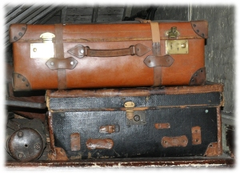 In this chapter of our Python-Tkinter tutorial we will introduce the layout managers or geometry managers, as they are sometimes called as well. Tkinter possess three layout managers:- pack
- grid
- place
- arrange widgets on the screen
- register widgets with the underlying windowing system
- manage the display of widgets on the screen
Pack
Pack is the easiest to use of the three geometry managers of Tk and Tkinter. Instead of having to declare precisely where a widget should appear on the display screen, we can declare the positions of widgets with the pack command relative to each other. The pack command takes care of the details. Though the pack command is easier to use, this layout managers is limited in its possibilities compared to the grid and place mangers. For simple applications it is definitely the manager of choice. For example simple applications like placing a number of widgets side by side, or on top of each other.Example:
from Tkinter import * root = Tk() Label(root, text="Red Sun", bg="red", fg="white").pack() Label(root, text="Green Grass", bg="green", fg="black").pack() Label(root, text="Blue Sky", bg="blue", fg="white").pack() mainloop()
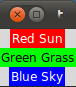
fill Option
In our example, we have packed three labels into the parent widget "root". We used pack() without any options. So pack had to decide which way to arrange the labels. As you can see, it has chosen to place the label widgets on top of each other and centre them. Furthermore, we can see, that each label has been given the size of the text. If you want to make the widgets as wide as the parent widget, you have to use the fill=X option:from Tkinter import * root = Tk() w = Label(root, text="Red Sun", bg="red", fg="white") w.pack(fill=X) w = Label(root, text="Green Grass", bg="green", fg="black") w.pack(fill=X) w = Label(root, text="Blue Sky", bg="blue", fg="white") w.pack(fill=X) mainloop()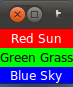
Padding
The pack() manager knows four padding options, i.e. internal and external padding and padding in x and y direction:| padx | External padding, horizontally
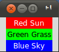 The code for the window above: from Tkinter import * root = Tk() w = Label(root, text="Red Sun", bg="red", fg="white") w.pack(fill=X,padx=10) w = Label(root, text="Green Grass", bg="green", fg="black") w.pack(fill=X,padx=10) w = Label(root, text="Blue Sky", bg="blue", fg="white") w.pack(fill=X,padx=10) mainloop() |
| pady | External padding, vertically 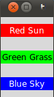 The code for the window above: from Tkinter import * root = Tk() w = Label(root, text="Red Sun", bg="red", fg="white") w.pack(fill=X,pady=10) w = Label(root, text="Green Grass", bg="green", fg="black") w.pack(fill=X,pady=10) w = Label(root, text="Blue Sky", bg="blue", fg="white") w.pack(fill=X,pady=10) mainloop() |
| ipadx | Internal padding, horizontally.
In the following example, we change only the label with the text "Green Grass", so that the result can be easier recognized. We have also taken out the fill option. 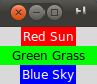 from Tkinter import * root = Tk() w = Label(root, text="Red Sun", bg="red", fg="white") w.pack() w = Label(root, text="Green Grass", bg="green", fg="black") w.pack(ipadx=10) w = Label(root, text="Blue Sky", bg="blue", fg="white") w.pack() mainloop() |
| ipady | Internal padding, vertically
We will change the last label of our previous example to ipady=10. 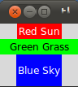 from Tkinter import * root = Tk() w = Label(root, text="Red Sun", bg="red", fg="white") w.pack() w = Label(root, text="Green Grass", bg="green", fg="black") w.pack(ipadx=10) w = Label(root, text="Blue Sky", bg="blue", fg="white") w.pack(ipady=10) mainloop() |
Placing widgets side by side
We want to place the three label side by side now and shorten the text slightly: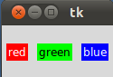
The corresponding code looks like this:
from Tkinter import * root = Tk() w = Label(root, text="red", bg="red", fg="white") w.pack(padx=5, pady=10, side=LEFT) w = Label(root, text="green", bg="green", fg="black") w.pack(padx=5, pady=20, side=LEFT) w = Label(root, text="blue", bg="blue", fg="white") w.pack(padx=5, pady=20, side=LEFT) mainloop()
If we change LEFT to RIGHT in the previous example, we get the colours in reverse order:
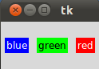
Place Geometry Manager
The Place geometry manager allows you explicitly set the position and size of a window, either in absolute terms, or relative to another window. The place manager can be accessed through the place method. It can be applied to all standard widgets.We use the place geometry manager in the following example. We are playing around with colours in this example, i.e. we assign to every label a different colour, which we randomly create using the randrange method of the random module. We calculate the brightness (grey value) of each colour. If the brightness is less than 120, we set the foreground colour (fg) of the label to White otherwise to black, so that the text can be easier read.
import Tkinter as tk
import random
root = tk.Tk()
# width x height + x_offset + y_offset:
root.geometry("170x200+30+30")
languages = ['Python','Perl','C++','Java','Tcl/Tk']
labels = range(5)
for i in range(5):
ct = [random.randrange(256) for x in range(3)]
brightness = int(round(0.299*ct[0] + 0.587*ct[1] + 0.114*ct[2]))
ct_hex = "%02x%02x%02x" % tuple(ct)
bg_colour = '#' + "".join(ct_hex)
l = tk.Label(root,
text=languages[i],
fg='White' if brightness < 120 else 'Black',
bg=bg_colour)
l.place(x = 20, y = 30 + i*30, width=120, height=25)
root.mainloop()
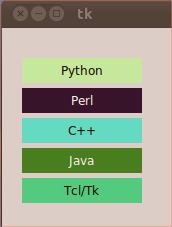
Grid Manager
The first geometry manager of Tk had been pack. The algorithmic behaviour of pack is not easy to understand and it can be difficult to change an existing design. Grid was introduced in 1996 as an alternative to pack. Though grid is easier to learn and to use and produces nicer layouts, lots of developers keep using pack.Grid is in many cases the best choice for general use. While pack is sometimes not sufficient for changing details in the layout, place gives you complete control of positioning each element, but this makes it a lot more complex than pack and grid.
The Grid geometry manager places the widgets in a 2-dimensional table, which consists of a number of rows and columns. The position of a widget is defined by a row and a column number. Widgets with the same column number and different row numbers will be above or below each other. Correspondingly, widgets with the same row number but different column numbers will be on the same "line" and will be beside of each other, i.e. to the left or the right.
Using the grid manager means that you create a widget, and use the grid method to tell the manager in which row and column to place them. The size of the grid doesn't have to be defined, because the manager automatically determines the best dimensions for the widgets used.
Example with grid
from Tkinter import *
colours = ['red','green','orange','white','yellow','blue']
r = 0
for c in colours:
Label(text=c, relief=RIDGE,width=15).grid(row=r,column=0)
Entry(bg=c, relief=SUNKEN,width=10).grid(row=r,column=1)
r = r + 1
mainloop()
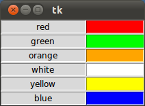